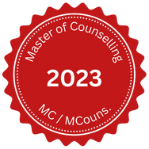

Chris Malone
Licensed Therapuetic Counsellor Book now
Christopher W. Malone MC (ACA)
It is critical before showing vulnerability that you have a sense of who it is you're talking to. The journey brings forth many emotions, but should remain positive and safe. Doing your homework is a must. Learn about me, my journey, and qualifications...
Qualifications
Experience is the most valuable teacher. But I want peace of mind for my clients as much as I do myself; after my undergraduate degree I completed two subsequent post graduate qualifications, with the latter being a Master of Counselling.
I am registered with the Australian Counselling Association (ACA) and on the Australian Register of Counsellors & Psychotherapists (ARCAP). I follow the ACA's guide of ethical practice to provide a quality and safe service to all my clients.
About me
I try not to take myself too seriously, but the passion I put into my work and relationships I take very, very seriously.
My values have grown along with my meaning throughout life. I would once consider achievement, success and status of importance. My core values are now lived through authenticity and compassion with a focus on on balance, love and peace.
I am proud that peers in my field have described me as 'the perfect balance of masculine and feminine energy'; this I use to assist in connecting you with your true self with clarity and purpose in life. My path to becoming a counsellor wasn't traditional. I spent two decades navigating the corporate world, analysing data and leading teams of people. This experience honed my analytical skills, igniting a passion for understanding the human side of things once becoming a people leader – the emotions, experiences, and relationships that make us who we are. My additional background working in Correctional Services highlighted the complex challenges individuals face. I can help you identify your patterns and thought processes while creating a space for understanding and compassion.

Lived experiences as a husband, father, and someone who has exposure to relationship challenges, complex family dynamics, addiction and neurodiversity inform my approach. I understand these struggles firsthand, walking alongside you with empathy and understanding.
My journey has enabled me to realised challenges we face each day can be overwhelming, and navigating them alone can seem impossible. My passion lies in guiding others in a no pressure environment towards a clear understanding of their struggles. Unearthing the root of these challenges is incredibly freeing, paving the way for a more empowered and joyful life. I live by the mantra that authenticity is the key. For this to be true there is no judgment here, and no topic is taboo. I believe true healing comes from a place of complete openness and honesty. Society can make us feel as though we we have to wear a mask and not be true to who we are. Together, we can create a safe environment where you feel empowered to be authentic, your true sense of self.
What is it?
When in therapeutic counselling or 'therapy', you will be speaking with a trained professional who can treat mental health issues, varying based on your needs and desires.
My Approach
Pluralistic and person-centred therapy are my primary practice. I use trauma based healing through compassionate presence, free from rigid interventions that may not best suit you. No gimmicks, hidden agendas or lectures here - the science behind human psychology and our society supports your complete autonomy.
My counselling style is pluralistic, while rooted in humanism, prioritising a person-centered approach that empowers you to explore your experiences and find your own solutions. When you enter your first session it's often a time to get to know the me and begin to establish a rapport. I will likely spend some time explaining my approach and the counselling process. I may also ask you to share a bit about yourself and why you decided to seek counselling. It's important to remember that there is no "right" way to feel during the first session. Some clients may feel nervous or anxious, while others may feel more relaxed and open. I create a confidential and welcoming environment for you to express your feelings and thoughts honestly. Attending pluralistic and person-centered counselling sessions can feel like stepping into a safe, non-judgmental space. My primary role is to provide a warm, empathetic, and accepting environment where you can explore your thoughts, feelings, and experiences without fear of being criticised or judged. The sessions are often open-ended and client-led. This means that you, as the client, are the expert on your own life and experiences. I actively listen to what you have to say, reflecting back your feelings and thoughts to help you gain a deeper understanding of yourself using extensive professional training. This process can be incredibly liberating, as it allows you to connect with your authentic self and develop a greater sense of self-awareness.
Which service fits?
In-person sessions are traditional, but that is not everyone's preference. Your journey is your choice.
In-person sessions
are a confidential, supportive space for you to explore your thoughts, feelings, and challenges. We will work together to understand and empower your well-being.

Online telehealth
offers a secure and supportive online counselling from the comfort of your own space, backed by the latest encrypted technology, ensuring privacy of your sessions.

Text-based therapy
is confidential support on your terms, flexible and accessible, allowing you to connect at agreed times, anywhere. Sometimes 'showing up' is not a vibe.

Crisis Support
I am not a crisis support or referral service. If you are at risk please refer to the these services.
I'm ready!
The greatest gift you can give to the world is a healed and happy you.
Get in touch
Not quite sure? If anything is left unanswered or you seek a quick commitment free chat, shoot through an enquiry: